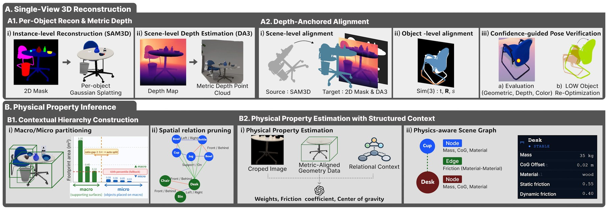
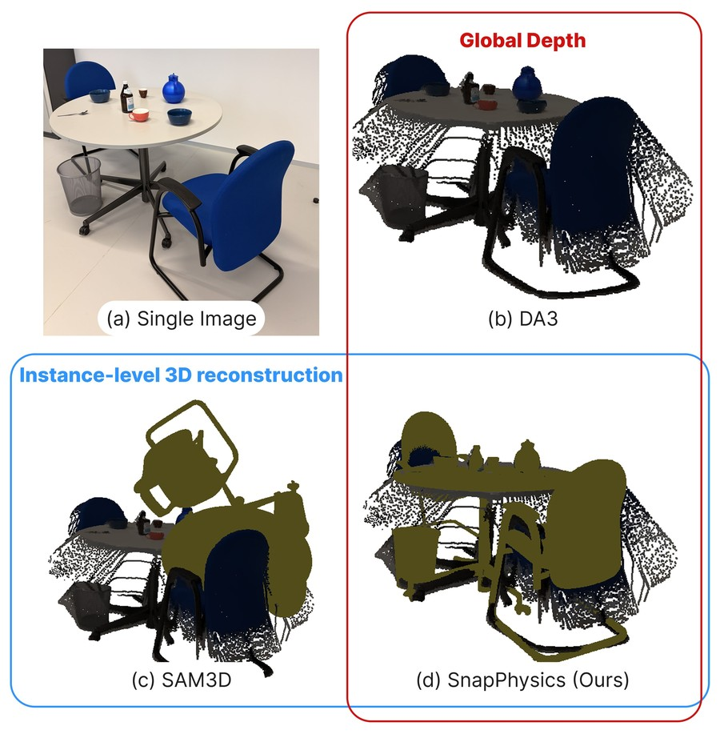
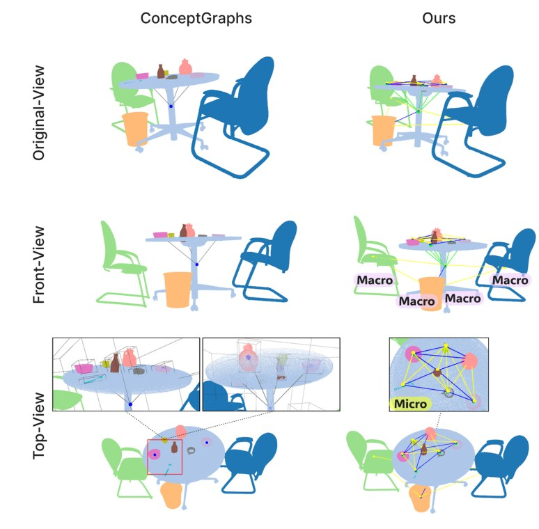
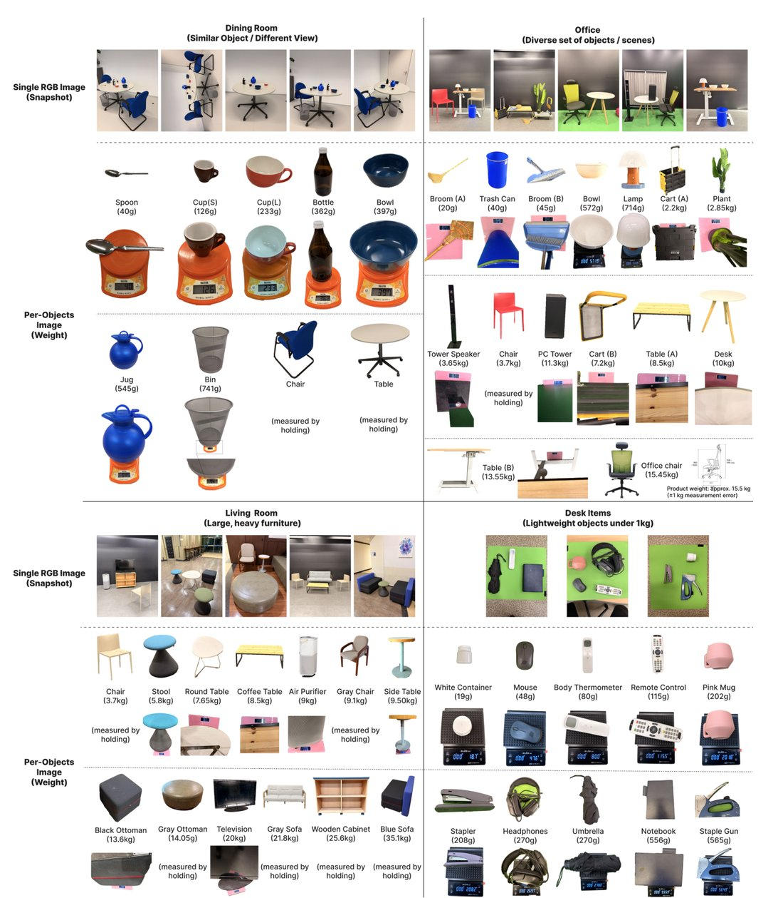
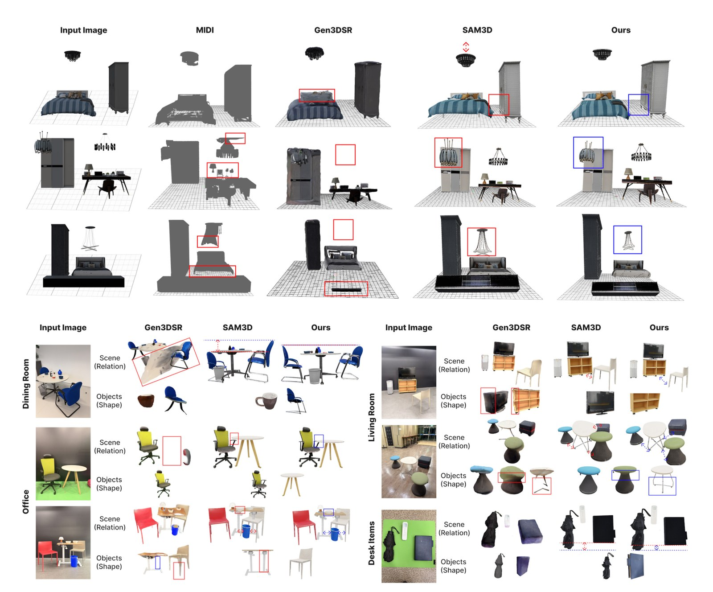

We propose SnapPhysics, a training-free framework that reconstructs 3D objects and estimates their physical properties such as mass, friction, and center of gravity from a single image. For physically coherent interactions in mixed reality (MR), such properties are as important as geometry. Prior approaches infer them by analyzing object dynamics in video, which is computationally costly, or by querying vision-language models (VLMs) on single images, which lacks geometric grounding and inter-object relationships. We address these limitations by combining instance-level 3D reconstruction and spatial alignment with a physics-aware scene graph that encodes these relationships and per-object metric geometry as structured context for VLM-based property reasoning. Experiments on 3D-FRONT show that SnapPhysics improves scene-level F-Score by 18.6% over the best learning-based method, and on real captured scenes with ground-truth mass, it reduces the mean absolute log difference error (mALDE) by up to 20.5% and improves log-scale correlation (r²ls) by up to 19.6% over VLM-only estimation. SnapPhysics enables physically interactive MR experiences without manual parameter tuning.
SnapPhysics is a two-stage, training-free pipeline:
(A) single-view 3D reconstruction with depth-anchored alignment,
(B) physical property inference and physics-aware scene graph.

Pipeline overview. (A1) Per-object 3D shape from SAM3D and scene-level metric depth from DA3. (A2) Depth-anchored alignment: scene-level alignment, per-object Sim(3) optimization, and confidence-guided pose verification. (B1) A macro–micro contextual hierarchy with spatial relation pruning. (B2) Structured VLM prompting estimates mass, friction coefficients, and center of gravity, stored in a physics-aware scene graph.
SAM3D yields faithful per-object shapes at arbitrary scale, while DA3 provides metric depth without object separation. Depth-anchored alignment registers every SAM3D instance into DA3's metric frame in three steps.
(1) Scene-level alignment. An initial Sim(3) transform (Umeyama) is refined with point-to-plane ICP and scale-corrected by the median depth ratio.
(2) Per-object alignment. Each object's Sim(3) pose is refined by differentiable optimization with depth, silhouette, Chamfer, and splat-rendering losses.
(3) Confidence-guided verification. Low-confidence poses are re-initialized from alternative rotations and re-optimized.

(b) DA3 estimates metric depth at the global scene level but cannot separate instances. (c) SAM3D reconstructs precise per-instance geometry but at arbitrary, non-metric scale. (d) SnapPhysics aligns SAM3D instances to the DA3 metric coordinate frame, achieving accurate instance-level shape and globally consistent metric scale, the geometric cue that makes plausible mass and friction inference possible.
Given the metrically aligned objects from Stage A, this stage estimates mass, friction, and center of gravity. A contextual hierarchy first partitions objects into macro supporters and micro objects, and a VLM then estimates properties from each object's image crop, geometry, and relations in support order.

Generic 3D scene graphs enumerate many candidate relations or collapse to a single "near" relation (left: ConceptGraphs). Instead, objects are partitioned into macro supporting surfaces (floor, tables) and micro objects resting on them, and only support (on), front/behind, and left/right relations are derived from metric geometry (right). Support edges also fix the estimation order, propagating materials from supporters to supported objects.
All estimates are stored in a physics-aware scene graph. Nodes carry metric geometry, mass, CoG, and material, while friction is modeled pairwise on support and contact edges. Authored once per scene, the graph is consumed directly by physics engines without manual tuning.
On 3D-FRONT (1,000 scenes), SnapPhysics achieves the best scene-level layout accuracy of all methods, including supervised ones, despite being training-free.
| Method | CD-S ↓ | F-Score-S ↑ | CD-O ↓ | F-Score-O ↑ |
|---|---|---|---|---|
| Total3DSupervised | 0.270 | 32.90 | 0.179 | 36.38 |
| SSRSupervised | 0.140 | 39.76 | 0.170 | 37.79 |
| DiffCADSupervised | 0.117 | 43.58 | 0.190 | 37.45 |
| Gen3DSRTraining-free | 0.123 | 40.07 | 0.157 | 38.11 |
| MIDISupervised | 0.080 | 50.19 | 0.103 | 53.58 |
| SnapPhysics (Ours)Training-free | 0.078 | 59.53 | 0.168 | 43.95 |
Scene-level (CD-S, F-Score-S) and object-level (CD-O, F-Score-O) metrics on 3D-FRONT. Supervised methods are trained on 3D scene datasets (MIDI is trained on 3D-FRONT itself); Training-free methods require no task-specific training. Our F-Score-S of 59.53 is an 18.6% improvement over MIDI, the best supervised method.
The top half compares reconstructions on the 3D-FRONT benchmark, where MIDI loses texture and thin structures, Gen3DSR suffers scale misalignment (red boxes), and SAM3D recovers shapes but lacks metric depth. The bottom half extends the comparison to real-world snapshots 

On real captured scenes with scale-measured ground truth, both ingredients matter: depth-aligned metric geometry (+DA3) and relational scene-graph context (+SG) each help, and their combination is consistently best.
| Condition | Geometry | Context | Dining Room 5 scenes / 10 obj |
Office 5 scenes / 15 obj |
Living Room 5 scenes / 15 obj |
Desk Items* 3 scenes / 10 obj |
||||||||||||
|---|---|---|---|---|---|---|---|---|---|---|---|---|---|---|---|---|---|---|
| mAPE ↓ | mMnRE ↑ | mALDE ↓ | r²ls ↑ |
mAPE ↓ | mMnRE ↑ | mALDE ↓ | r²ls ↑ |
mAPE ↓ | mMnRE ↑ | mALDE ↓ | r²ls ↑ |
mAPE ↓ | mMnRE ↑ | mALDE ↓ | r²ls ↑ |
|||
| VLM Only | — | — | 59.9 | 0.603 | 0.550 | 0.901 | 102.6 | 0.633 | 0.576 | 0.809 | 41.6 | 0.701 | 0.397 | 0.603 | 262.9 | 0.579 | 0.827 | 0.858 |
| SAM3D | arbitrary scale | — | 49.5 | 0.528 | 0.809 | 0.864 | 99.4 | 0.629 | 0.570 | 0.807 | 40.4 | 0.616 | 0.508 | 0.836 | 367.2 | 0.588 | 0.880 | 0.914 |
| +DA3 | metric | — | 59.3 | 0.604 | 0.540 | 0.908 | 91.1 | 0.649 | 0.534 | 0.876 | 44.2 | 0.681 | 0.473 | 0.522 | 213.5 | 0.570 | 0.792 | 0.918 |
| +SG | arbitrary scale | scene graph | 53.3 | 0.535 | 0.754 | 0.878 | 92.9 | 0.626 | 0.557 | 0.839 | 43.1 | 0.686 | 0.463 | 0.447 | 282.2 | 0.542 | 0.887 | 0.917 |
| Ours (Two-Stage) | metric | scene graph | 52.4 | 0.676 | 0.437 | 0.928 | 87.4 | 0.659 | 0.517 | 0.883 | 35.9 | 0.735 | 0.333 | 0.721 | 168.1 | 0.517 | 0.795 | 0.959 |
Cross-scene mass estimation accuracy (Table 4 in the paper). Each condition is evaluated over 10 independent runs × 10 repeats per input image (100 total evaluations); mean values shown, std in the paper. ↑ higher is better (mMnRE, r²ls); ↓ lower is better (mAPE, mALDE). Best per column in bold. *The Desk Items scene consists exclusively of lightweight objects (<1 kg). All conditions share the same VLM backbone.
@inproceedings{kang2026snapphysics,
title = {{SnapPhysics}: A Physics-Aware Scene Graph from a Single View
for Interactive Mixed Reality Scenes},
author = {Kang, Suji and Kim, Seok-Young and Kim, Young Bin and Ha, Taewook
and Schmalstieg, Dieter and Mori, Shohei and Woo, Woontack},
booktitle = {IEEE International Symposium on Mixed and Augmented Reality (ISMAR)},
year = {2026}
}